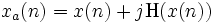
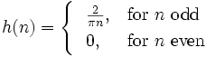
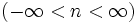
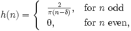
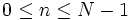

HilbertFilter
Contributions
Contents |
Synopsis
This filter computes the envelope or the phase of a signal using Hilbert transform. The discrete input signal x(n) is first transformed to its analytic representation (i.e., analytic signal), which is composed of real and imaginary parts.
- 
The real part is the same input signal, and the imaginary part is the Hilbert transform of the input signal. The Hilbert transform is implemented as the convolution of the input signal with the filter h(n).
- 
To get an ideal Hilbert transform, n must be infinitely long . However, for real time implementations, h(n) must be truncated and delayed to guarantee a causal filter. Thus, the FIR filter is defined as
- 
for , where N is an odd number representing the length of the filter in samples, and the resulting Hilbert transform is delayed by a number of samples δ = (N − 1) / 2. The real part of the analytic signal must also be delayed by the same amount in order to estimate the envelope and phase of the input signal.
Location
Versioning
Authors
Cristhian Potes, Jeremy Hill
Parameters
OutputSignal
This parameter determines which quantity is output from the filter. It may be one of:
- 0 - Copy input signal
- no processing,
- 1 - Magnitude
- Hilbert envelope amplitude,
- 2 - Phase
- Hilbert phase,
- 3 - Real part
- original input signal, but with a delay to match its timing to the imaginary part.
- 4 - Imaginary part
- original signal filtered with an FIR-Hilbert transformer.
Delay
As for most BCI2000 parameters expressing time, this parameter should be expressed either as a number of SampleBlocks (a bare number without unit) or as a physical length of time with a unit appended (e.g. "0.1s").
The length of the Hilbert filter itself is N = 2δ + 1 once the delay has been converted to a number of samples δ. Conversely the delay is δ = (N − 1) / 2, where N is the (odd) number of samples in the filter. Empirically, we have found that N ≥ 201 samples (i.e. δ ≥ 100 samples) is advisable for a reasonable-quality approximation to the infinite Hilbert transform. A warning is issued if the delay is shorter than this.
States
None.
See also
User Reference:Filters, Contributions:SignalProcessing, Contributions:HilbertSignalProcessing
![[BCI2000 Help]](../../images/bci2000logo_small.png)